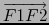
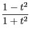
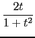
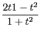

^3-p*x+q,3*x^2-p,x)
^3-27*q^2
Un exemple d'utilisation du résultant
Soient 2 points fixes F1 et F2 et un point variable A sur le cercle de
centre F1 et de rayon 2a.
On veut trouver l'équation cartésienne du lieu des points M intersection de
F1A et de la médiatrice de F2A : on a
MF1 + MF2 = MF1 + MA = F1A = 2a donc M
décrit une ellipse de foyers F1 et F2 et de grand axe 2a.
Choisisons comme repère orthonormé celui de centre F1 et d'axe Ox
porté par le vecteur
. On a :
A = (2a cos( );2a sin(
);2a sin( )) où
)) où  est l'angle (Ox, OA).
On choisit comme paramètre
t = tan(
est l'angle (Ox, OA).
On choisit comme paramètre
t = tan( /2) pour que les coordonnées de
A soient une fonction rationnelle du paramètre t. On a donc :
/2) pour que les coordonnées de
A soient une fonction rationnelle du paramètre t. On a donc :
A = (ax;ay) = (2a;2a)
On pose F1F2 = 2c et on note I le milieu de AF2. On a :
F2 = (2c, 0) et
I = (c + ax/2;ay/2) = (c + a;a)
IM est perpendiculaire à AF2 donc M = (x;y) vérifie l'équation
eq1 = 0 avec :
eq1 : = (x - ix)*(ax - 2*c) + (y - iy)*ay
M = (x;y) est sur F1A donc M vérifie l'équation eq2 = 0 avec :
eq2 : = y/x - ay/ax
On a :
resultant(eq1,eq2,t) est un polynôme eq3 en x et y, eq3 est
indépendant de t et il existe des polynômes en t, U et V tels que :
U(t)*eq1 + V(t)*eq2 = eq3.
On tape :
ax:=2*a*(1-t^2)/(1+t^2);ay:=2*a*2*t/(1+t^2);
ix:=(ax+2*c)/2; iy:=(ay/2)
eq1:=(x-ix)*(ax-2*c)+(y-iy)*ay
eq2:=y/x-ay/ax
factor(resultant(eq1,eq2,t))
On obtient comme résultant :
-(64 . (x^2+y^2) . (x^2 . a^2-x^2 . c^2+-2 . x . a^2 . c+2 . x . c^3-a^4+
2 . a^2 . c^2+a^2 . y^2-c^4))
Le facteur -64 . (x^2+y^2) ne s'annule jamais donc
l'équation du lieu est :
^2 . a^2-x^2 . c^2+-2 . x . a^2 . c+2 . x . c^3-a^4+
^2 . c^2+a^2 . y^2-c^4,[x,y]=[c+X,Y]))
^2*X^2+c^2*a^2+X^2*a^2-a^4+a^2*Y^2
^2*X^2+c^2*a^2+X^2*a^2-a^4+a^2*Y^2,c^2=a^2-b^2))
^2*b^2+a^2*Y^2+b^2*X^2
Un autre exemple d'utilisation du résultant
Soient 2 points fixes F1 et F2 et un point variable A sur le cercle de
centre F1 et de rayon 2a.
On veut trouver l'équation cartésienne de l'enveloppe de la médiatrice D
de F2A (on sait que la médiatrice de F2A est tangente à l'ellipse de
foyers F1 et F2 et de grand axe 2a).
Choisisons comme repère orthonormé celui de centre F1 et d'axe Ox
porté par le vecteur
. On a :
A = (2a cos( );2a sin(
);2a sin( )) où
)) où  est l'angle (Ox, OA).
On choisit comme paramètre
t = tan(
est l'angle (Ox, OA).
On choisit comme paramètre
t = tan( /2) pour que les coordonnées de
A soient une fonction rationnelle du paramètre t. On a donc :
/2) pour que les coordonnées de
A soient une fonction rationnelle du paramètre t. On a donc :
A = (ax;ay) = (2a;2a)
On pose F1F2 = 2c et on note I le milieu de AF2. On a :
F2 = (2c, 0) et
I = (c + ax/2;ay/2) = (c + a;a)
D est perpendiculaire à AF2 donc D a pour équation :
eq1 = 0 avec :
eq1 : = (x - ix)*(ax - 2*c) + (y - iy)*ay
L'enveloppe de D est donc le lieu de M intersection de D et de D'
d'équation eq2 = 0 avec
eq2 : = diff (eq1, t).
On tape :
ax:=2*a*(1-t^2)/(1+t^2);ay:=2*a*2*t/(1+t^2);
ix:=(ax+2*c)/2; iy:=(ay/2)
eq1:=normal((x-ix)*(ax-2*c)+(y-iy)*ay)
eq2:=normal(diff(eq1,t))
factor(resultant(eq1,eq2,t))
On obtient comme résultant :
(-(64 . a^2)) . (x^2+y^2) . (x^2 . a^2-x^2 . c^2+-2 . x . a^2 . c+2 . x . c^3-
a^4+2 . a^2 . c^2+a^2 . y^2-c^4)
Le facteur -64 . (x^2+y^2) ne s'annule jamais donc l'équation du
lieu est :
x2a2 - x2c2 + -2xa2c + 2xc3 - a4 +2a2c2 + a2y2 - c4 = 0
En prenant l'origine du repère en O milieu de F1F2, on retrouve comme
précédemment l'équation cartésienne de l'ellipse :